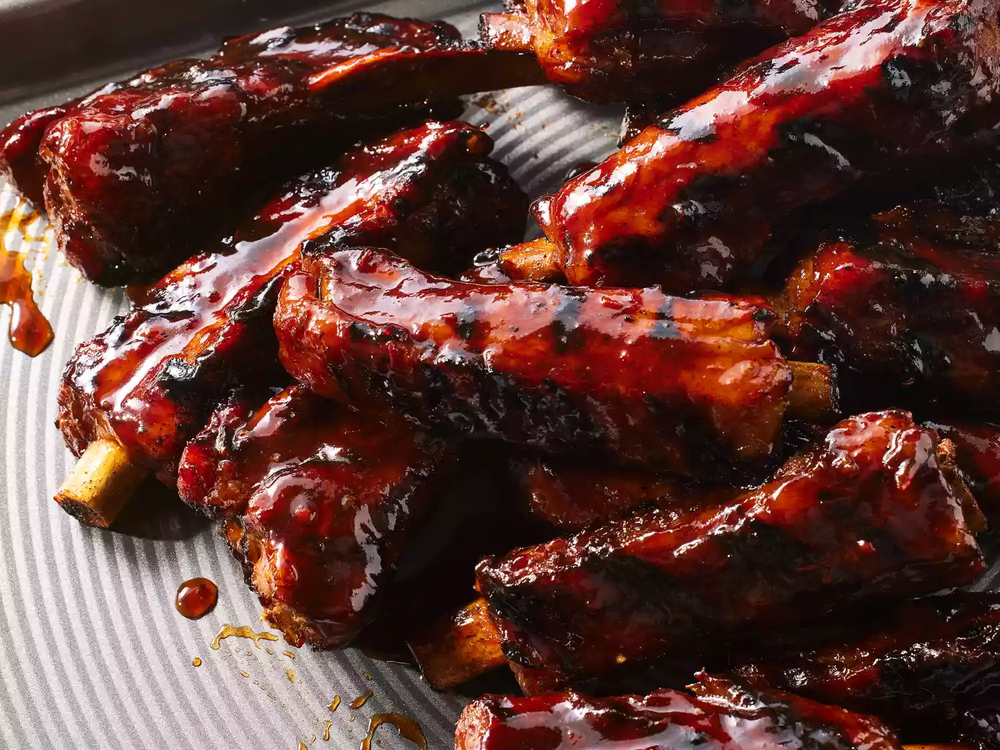

Barbecue

Homemade rib marinade is used in this barbecue ribs recipe that's easier than it looks. I usually cook the ribs the day before and grill them for a quick dinner the next night. The sauce is much better after it is cooked; it is not a dipping sauce.
Ingredients
- 4 pounds pork spareribs
- 1 cup brown sugar
- 1/2 cup chile sauce
- 1/4 cup ketchup
- 1/4 cup soy sauce
- 1/4 cup Worcestershire sauce
- 1/4 cup rum
- 2 cloves garlic, crushed
- 1 teaspoon dry mustard
- 1 dash ground black pepper
- Cooking spray
Directions
- Preheat oven to 350 degrees F (175 degrees C)
- Cut spareribs into serving size portions; wrap in double thickness of foil
- Bake in the preheated oven for 1 1/2 hours. Unwrap and drain drippings. (Freeze drippings for later use)
- Place ribs in large roasting pan
- Mix brown sugar, chile sauce, ketchup, soy sauce, Worcestershire sauce, rum, garlic, mustard, and pepper together in a bowl. Coat the ribs with sauce and marinate at room temperature for 1 hour or refrigerate for 8 hours overnight>
- Preheat the grill to medium heat. Position the grate 4 inches above heat source; grease the grate with cooking spray
- Cook ribs on preheated grill for 30 minutes; basting with marinade